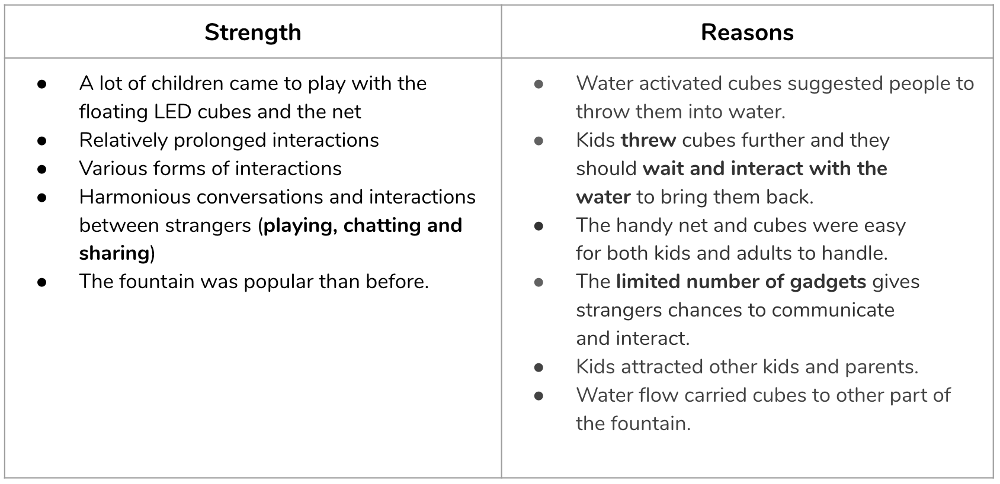

Concept
We planned to set up a set of fishing equipment right next to the fountain, hoping to create contrast to reignite people’s curiosity for daily environment and attract them to interact with the fountain in Bryant Park.
Intended Interactions

On-site Setting
- Location: Bryant Park- Josephine Shaw Lowell Memorial Fountain
- Weather: Cloudy
- Date: 09/15/2019- Saturday
- Time: 5:10pm-7:30pm
- Groups of Passersby: Kids with their parents/grandparents; Tourists; Couples; Family andFriends
Observations
Reflection & Feedbacks


Future Iteration
- Focus on the interaction with water
- Cover a larger area of the fountain with more floating cubes and with the help on the water flow
- Cutting out the superfluous and complicated tools (fishing rod)
- Simpler triggers of interactions(bigger and bright-color floating cubes)
- More obvious feedbacks for interactions to engage different groups of people